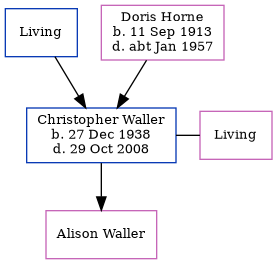

Christopher John Waller 1938 - 2008
[ Home ] | [ Calendar ] | [ Surnames Index ] | [ Errors ] | [ Family History ]The child of John Waller and Doris Horne, Christopher Waller, the third cousin once-removed on the father's side of Nigel Horne, was born in Dover, Kent, England on 27 Dec 19381 and married Olive Edwards (with whom he had 1 child, Alison) in Bromsgrove, Worcestershire, England around May 19663.
He died on 29 Oct 2008 in Croydon, Surrey, England2.
Parents
- John James
- Doris Olive was born on 11 Sept 1913
Citations
- England & Wales births 1837-2006 - Findmypast
- United Kingdom Deaths 2007-2017 - Findmypast
- England & Wales Marriages 1837-2005 - Findmypast
Media
England & Wales marriages 1837-2008 - BMD/M/1966/2/AZ/001150/024
England & Wales births 1837-2006 - BMD/B/1939/1/AZ/001230/146
United Kingdom Deaths 2007-2017 - BMD/D/MILLEN/002810989
Family Tree
Map
Generated by ged2site. Last updated on Jul 3, 2024
Known Issues
Parent Doris is listed in the residence for 29 Sep 1939, but this child is not
1939 UK register information missing